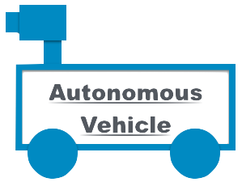
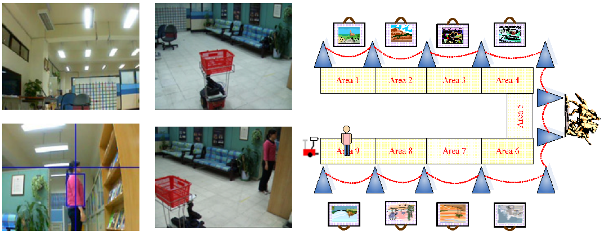

| |
|  |
Construction of Vision-Based Intelligent Environment
|
Objective
Devised an intelligent system for person following using a vehicle equipped with a video camera. Potential applications include: use as an autonomous shopping cart, or as a personal museum/exhibition/tour guide.
Papers
- "A Study on Autonomous Vehicle Guidance for Person Following by 2D Human Image Analysis Advertising 3D Computer Vision Techniques, Kuan-Ting Chen and Wen-Hsiang Tsai, Proceedings of The 20th IPPR Conference on Computer Vision, Graphics and Image Processing, 2007.
- "A Study on Autonomous Vehicle Guidance for Person Following by 2D Human Image Analysis and 3D Computer Vision Techniques," Kuan-Ting Chen, M.S., Thesis, Institute of MultimediaEngineering, National Chiao University, Taiwan, 2007.
- Technical Transfer to MIS Co., Ltd., for robot development
Abstract
An intelligent vision-based vehicle system for person following was proposed. A target person who turns fast at a corner in a narrow path is tracked via use of crossroad points and image information taken by a robot arm. Techniques for intelligent interaction with humans to provide more intelligent services are also proposed, which can be employed to detect the facing direction and the hand movement of a person. Good experimental results show the flexibility and feasibility of the proposed methods for the application of indoor person following.

|
|